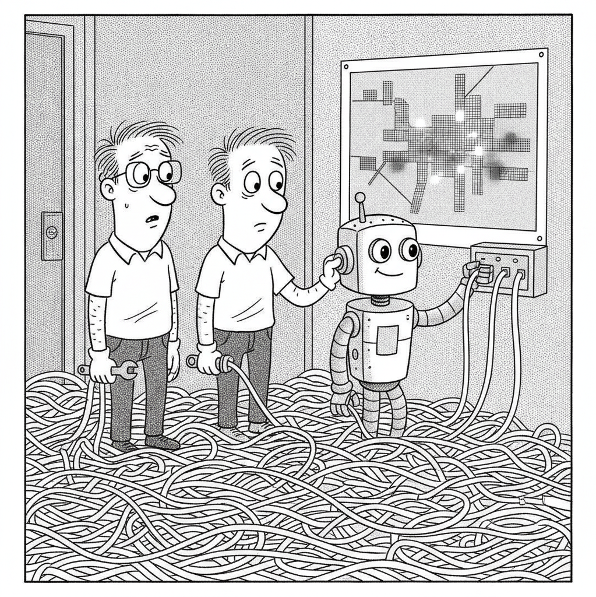

Your daily AI news digest
AI the News That's Fit to Prompt

The Outages Are Just Getting Started
After a week of outages that hit Outlook, Apple, a half dozen U.S. banks, United Airlines and the NSA’s classified network, Wired’s Kernel Panic newsletter says the incidents were not a coordinated AI hacking spree. But AI-assisted bug discovery is flooding IT teams with patches to evaluate and deploy fast, and researchers say that pressure is starting to play a role in real-world failures.
Tech Outages Are Only the Beginning. A.I. Will Bring More Disruptions.
Cybersecurity has been an afterthought since the early days of the internet. Now A.I. is uncovering dormant problems, making the bill come due for decades of vulnerable code.

“It says it fixed the bug. It also says it found forty more.”
Each letter stands for another. Today’s quote is a Wired headline. Letters in tan are given.

Is Anthropic turning into OpenAI?
The Anthropic IPO raises big questions about how we balance idealism with capitalism, and whether safety takes a back seat when you answer to the public markets.
Signal restricts mobile screenshots as it confronts ‘existential threat’ of AI surveillance
Signal is limiting users' ability to take screenshots in both its Android and iOS apps.

A tale of two Nvidias
We got two very different pictures of Nvidia - the company’s latest earnings report vs. the tech executives loudly calling for Jensen Huang’s return.

'This seems like an extreme privacy violation.' Surprising messages from the Muse AI agent are unnerving Meta's own employees, report says
In one example, a Meta staffer reported that Muse sent her a reminder on her personal phone to respond to a message from her sister on the encrypted messaging service Signal.

The AI bust is a growing threat to China's economy and a 'moment of real danger' for President Xi Jinping, analyst warns
"To keep AI funding flowing, Xi needs a buoyant stock market."

Data centers full of U.S. chips are serving Chinese AI models–undermining Trump’s tech ambitions
The same infrastructure that secures America’s advantage in chips and cloud services gives Chinese AI models a platform to spread.

The UN fails to agree on rules regulating ‘killer robots’
Countries agree to ‘start discussing options’ for rules around autonomous weapons.
Only 18% of Gen Z workers want to build AI skills. A Wharton professor says using AI is riskier for them
A Seramount survey of more than 1,800 U.S. white-collar workers finds Gen Z far less eager than older colleagues to build AI skills. Research suggests their fear of an AI stigma isn't unfounded.
A New Era of A.I.-Driven Chaos? That Might Just Be Progress.
If artificial intelligence is giving rise to outages, cyberattacks and more, it’s consistent with history, in that it shows how new innovations often set off calamitous failure before they make life better.
Here are the top AI agents that can live in your text messages
We created a list of the most notable AI agents that can live in your text messages, from general assistants to agents designed for families, travel, and work.
Is selling an AI version of your face to this microdrama startup the future of Hollywood?
An actor has licensed his face to a microdrama startup - in a trend that's already popular in China. Experts question the long-term consequences if this becomes a trend in Hollywood, too.
California Nvidia Probe Covers Potential Criminal Law Violations
California’s probe into whether Nvidia illegally sold advanced chips to China and misled investors is also looking at potential criminal violations of state law.